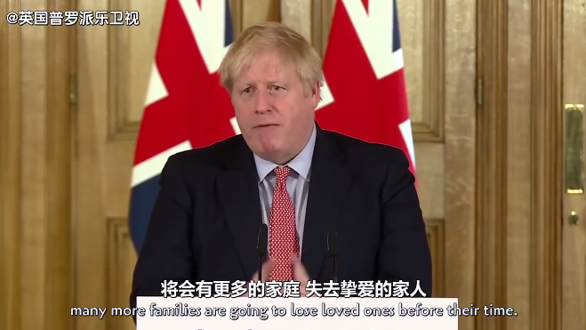
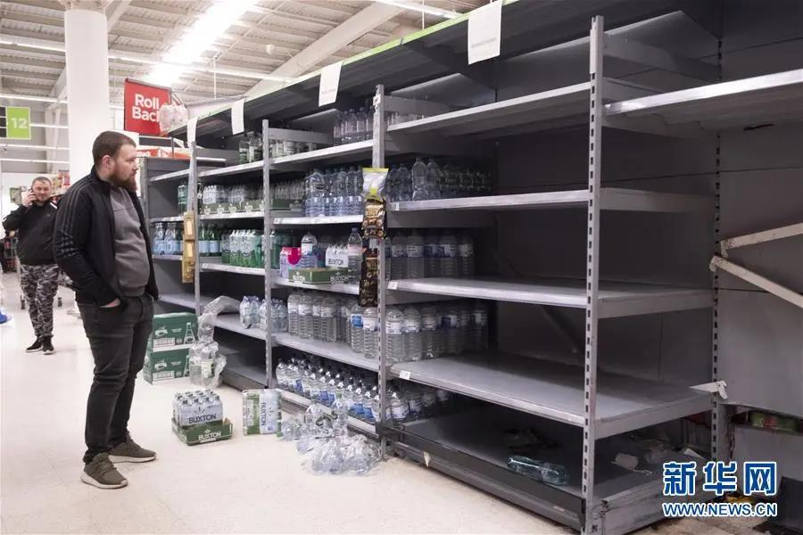

牛津流行病学家陈铮鸣：做最坏打算，英国防疫策略会成功吗？| 独家专访
原文链接 备份链接 作为一个科学大国，英国是如何应对新冠疫情的？他们是否能走出一条和中国不同、社会成本更低而行之有效的防疫之路？为此我们采访了流行病学专家、牛津大学终身教授陈铮鸣。 英国于 1 月底确诊第一位来自中国的输入性新冠患者。截 …
去年9月刚入学伦敦大学学院(ucl)的大一学生黄嘉琪（化名）没有想到，自己成年后遇到最大的困难是新冠肺炎。
今年1月初，黄嘉琪从伦敦飞回国，准备度过入学以来的第一个圣诞假期，为了1月下旬准时入学，她提前买好了回伦敦的机票，适逢中国疫情爆发，原本安全的避风港——英国也在两个月后沦陷。
就在接受南都记者采访的前两天，她的父亲因为过于担忧女儿的境况，为她买了回国机票，经济舱两万余元，这是平时机票价格的近4倍。
听闻从英国回国的机票有的已上涨至18万仍一座难求，黄嘉琪并不惊讶，“会有很多人因为机票太贵不回国吗？”“很少吧，还是命比较重要。”这位年纪尚小的00后尚不知金钱的压力，来自家庭的庇护让她在疫情之下，依然有着某种近乎天真的乐观：“我知道回国要集中隔离，我爸妈要我回来，听说机票很贵是吗？我也不知道，因为机票都是我爸花钱买的。”
“害怕、不理解英国政府，但是似乎也没那么恐慌。”远在千里之外的黄嘉琪讲述了这段时间以来在英国的故事，以下是她的口述。
英国政府呼吁隔离，有人发起自我隔离聚会
上个周四，英国首相鲍里斯·约翰逊发表了正式演讲，宣布新冠肺炎成为数十年来最严重的公共卫生危机。鲍里斯建议我们勤洗手、居家隔离，但是他说不会关闭学校和取消大型集会，并告诉我们英国会有更多的家庭失去家人。

鲍里斯说防疫有四个阶段，分别为遏制、延迟、研究、缓和，英国的防控现在是第二阶段，但令人费解的是，英国之前是迟迟不进入第二阶段，包括禁止聚会，也是3月16日才宣布的。
之前鲍里斯一直表示学校不需要关闭，大型聚会也依然可以正常举行，英国政府此前呼吁大家有症状的话，可以自我隔离，但搞笑的是有人发起了“自我隔离聚会”，可以有不同的主题PARTY，我觉得太荒谬了。
我个人不太认可英国的防疫措施，英国的防疫有点晚了，特别是第一阶段，感觉什么都没做，而且英国本来地方就不大，大家还不戴口罩，很难防止疫情蔓延，可能也是因为效率低吧，我之前看新闻说，有人给英国的医疗系统打电话希望接受检测，但没有人给他做检测，全英国目前也只检测了几千例。英国令人担忧的问题是，接受新冠肺炎检测的人数太少了。
提倡不戴口罩勤洗手，戴口罩出门遭遇歧视
英国政府一直提倡不戴口罩，只是呼吁勤洗手，并且洗手的时候要唱两遍生日歌保证洗手的时间和唱歌的时间一样长，这样才有效。
还有地方甚至有一些NOTICE BOARD上面写着，如果你身体很健康没有不舒服，请不要戴口罩，如果你觉得有症状，可以戴口罩，但是你应该呆在家里不出门，以防影响别人。
国内因为新冠肺炎，人人都戴口罩，我爸妈也一直告诉我要戴口罩，我觉得这是很重要的预防措施，但英国没有人戴，英国人的观点是戴了口罩就代表你是病人。
我有一个朋友因为戴口罩出门遭遇了歧视，被骂“滚回中国”，还有朋友戴着口罩在我家楼下被英国流浪汉打了，我朋友当时反击了，但是大环境下还是没有人戴口罩。
虽然我觉得戴口罩非常重要，但是我不敢，怕戴着走出去被歧视，我只能出门尽量打车，不乘坐公共交通。
其实英国的药店也出现了口罩被抢空的现象，亚马逊上的口罩很快就没了，我之前也在网上囤了几盒，但没想到疫情会爆发的这么严重，根本不够用。

3月15日英国伦敦民众不戴口罩在超市抢物资（图片来源于新华网）
学校改成上网课，留学生准备回中国
我不是因为要逃离国内疫情才来英国的，现在网上有种说法，留学生之前因为国内疫情就跑出国，现在国外有了疫情又要回来，其实不是这样的，我是因为要开学就回英国了，还因此放弃了和爸妈一起过年。
回来之后，中国就爆发疫情了，当时有点害怕，我的亲戚朋友都在中国，也很担心爸爸妈妈，我家是湖北的，那里是重灾区，但没想到后来新冠肺炎成了全球大流行的疾病。
英国第一例比中国晚一些，第一例不在伦敦，我并不怎么感到害怕，但从伦敦开始出现病例，英国政府采取的措施我又不是很认同的时候，我很担忧疫情会在英国爆发。
从一月份到三月份，直到前几天我们学校才宣布上课改为网课，考试也改为线上考试，不再需要去学校，而英国政府此前一直强调年轻人有症状就在家里自我隔离，不要去医院，理由是英国的医疗资源有限，年轻人有强壮的体格可以自愈。
我身边的同学可能因为这样的现实情况，很多都选择回国了，至少我身边的大部分同学都已经回国了，我已经算是比较晚的一批，有一部分很早就回中国了。
花两万块买机票，愿意自费回国集中隔离
我爸妈一直劝我回来，上周我爸终于坐不住了给我买了机票，催促我回国，国内疫情好转了，但英国的形势让他很担心，当时买机票的时候，直飞上海经济舱好像是两万多块，因为机票都是我爸在买，我也没太记得多少钱，但平时一般只有六七千块。
新闻上说这几天机票涨到18万块一张，但我身边很少因为机票太贵就不回国的，毕竟还是命比较重要。
因为要回国了，我最近也一直在关注入境政策。上海机场一般是回国后为了保险起见，无症状的也会到隔离酒店集中隔离14天。北京市是从3月16日开始，所有入境人员都要送到集中观察点观察14天，费用自理。
我原本想的也是回来后就自己找酒店自费隔离，但是因为很多酒店都不收湖北籍，我应该是回去到指定酒店集中隔离，其实我爸妈本来是想接我回湖北的，但现在条件也不允许。近段时间输入性病例比较多，留学生回国也多，主动隔离也是对自己和别人负责吧。
文/蒋小天
原文链接 备份链接 作为一个科学大国，英国是如何应对新冠疫情的？他们是否能走出一条和中国不同、社会成本更低而行之有效的防疫之路？为此我们采访了流行病学专家、牛津大学终身教授陈铮鸣。 英国于 1 月底确诊第一位来自中国的输入性新冠患者。截 …
原文链接 备份链接 【财新网】（实习记者 纪思琪）身在纽约市，终于感受到疫情来临。校长Lee Bollinger的邮件在3月8日晚上8点41分发出，哥伦比亚大学因为新冠病毒停课了。 停课的决定来自于一个有Covid-19暴露史的人。校长在 …
原文链接 备份链接 境外累计确诊病例即将超过2万。美国很可能有上千例潜在感染病例以及他们的密切接触者未能被及时发现和隔离，到目前为止，“我们看到的美国官方病例数字可能只是冰山一角”。 文 |《财经》数据研究员徐进 图 |《财经》 …
原文链接 备份链接 *************▲*************春天来了，学校门前的路却空空荡荡。 （沉白白/图） 全文共4034字，阅读大约需要7分钟。 威尼托大区本周关闭了学校，却没有要求大家在家隔离。看着窗外三三两两去踢 …
原文链接 备份链接 【财新网】（记者 宿慧娴 综合）新冠疫情在海外蔓延速度加快，又有多国启动“封锁”，并加大社交隔离管控力度。欧洲封锁边境国家达到11个，加拿大宣布关闭边境。疫情趋缓的亚太地区又见升温，马来西亚16日宣布全国进入“封锁”状 …